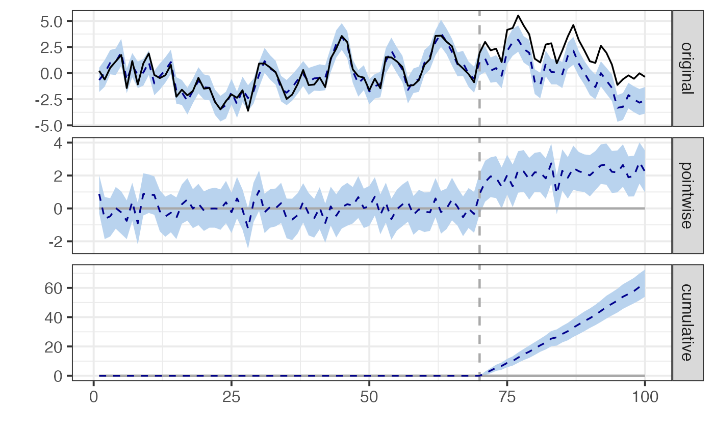

Causal Impact Analysis
causal-impact.Rmd📊 Causal Impact Analysis
Causal Impact is a Bayesian structural time-series method used to evaluate the effect of an intervention when randomization is not feasible.
🧪 Simulate Pre/Post Intervention Time Series
set.seed(101)
n <- 100
pre_period <- 1:70
post_period <- 71:100
x <- arima.sim(model = list(order = c(1, 0, 0), ar = 0.8), n = n)
y <- x + rnorm(n, 0, 0.5)
# Add treatment effect in post period
y[post_period] <- y[post_period] + 2
data_ts <- cbind(y, x)📈 Run Causal Impact
## Posterior inference {CausalImpact}
##
## Average Cumulative
## Actual 2 60
## Prediction (s.d.) -0.092 (0.16) -2.771 (4.87)
## 95% CI [-0.41, 0.2] [-12.43, 6.1]
##
## Absolute effect (s.d.) 2.1 (0.16) 62.9 (4.87)
## 95% CI [1.8, 2.4] [53.9, 72.5]
##
## Relative effect (s.d.) -625% (32539%) -625% (32539%)
## 95% CI [-16020%, 13361%] [-16020%, 13361%]
##
## Posterior tail-area probability p: 0.00101
## Posterior prob. of a causal effect: 99.8993%
##
## For more details, type: summary(impact, "report")
plot(impact)